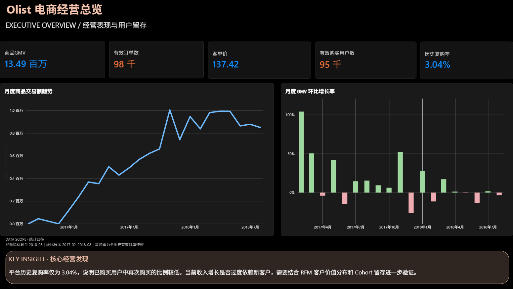

平台交易规模与增长趋势如何？
GMV · 有效订单 · 月度变化
DATA ANALYTICS / CASE STUDY
基于 Olist 巴西电商公开交易数据，使用 MySQL 关联九张业务表并建立经营指标，通过 Power BI 分析经营趋势、收入结构、用户行为与订单履约，呈现平台的业务表现及值得进一步研究的问题。
先认识经营表现，再分别深入用户和履约问题
GMV · 有效订单 · 月度变化
品类贡献 · 州级分布 · 支付方式
购买频次 · Cohort · RFM
配送偏差 · 客户评分 · 卖家表现
四页原始看板截图 · 可切换浏览

看板图片尚未上传到仓库。请先上传完整网站包中的 assets 文件夹。
图片展示保留原有大屏视觉；如需筛选和图表交互，请下载 .pbix 后在 Power BI Desktop 中打开。 下载四页 PDF。